Kitchen math quiz: How many teaspoons are in one tablespoon? / No 1/4 cup measure. How many tablespoons do you use? / How many tablespoons are in 1/3 cup? · made 2026-10-27T04:44:45.735Z · run cost $0.000
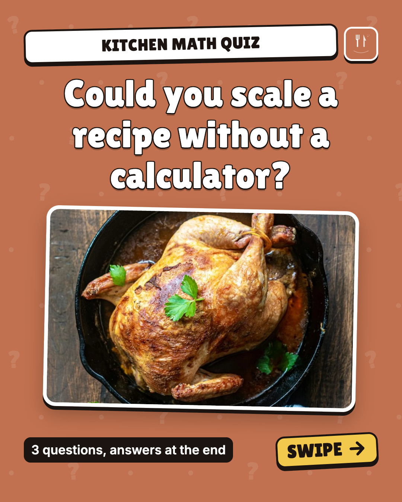
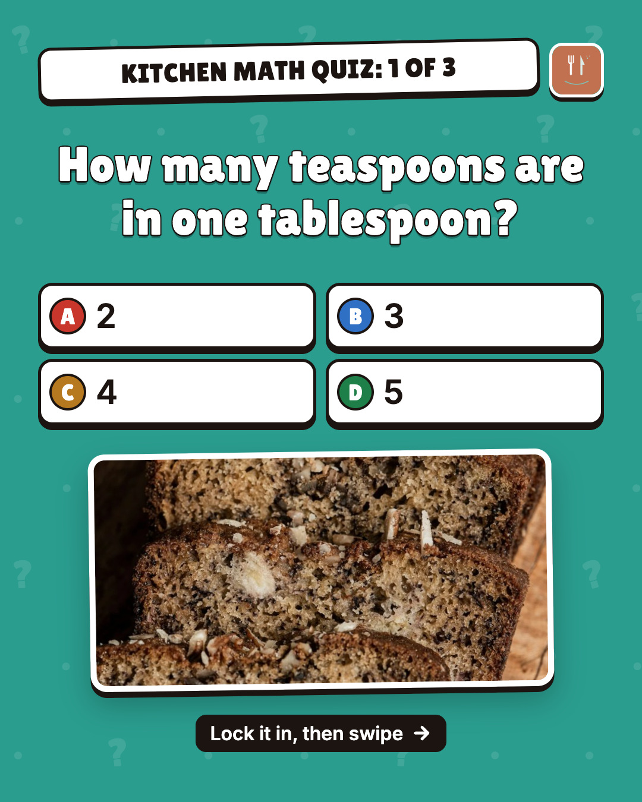
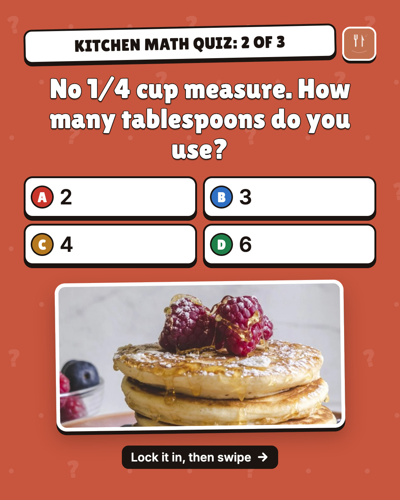
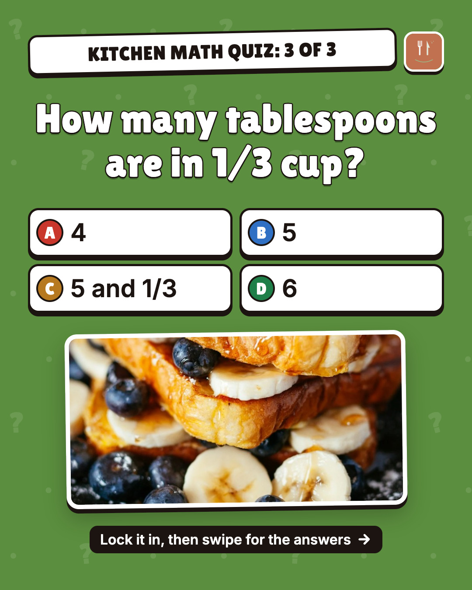
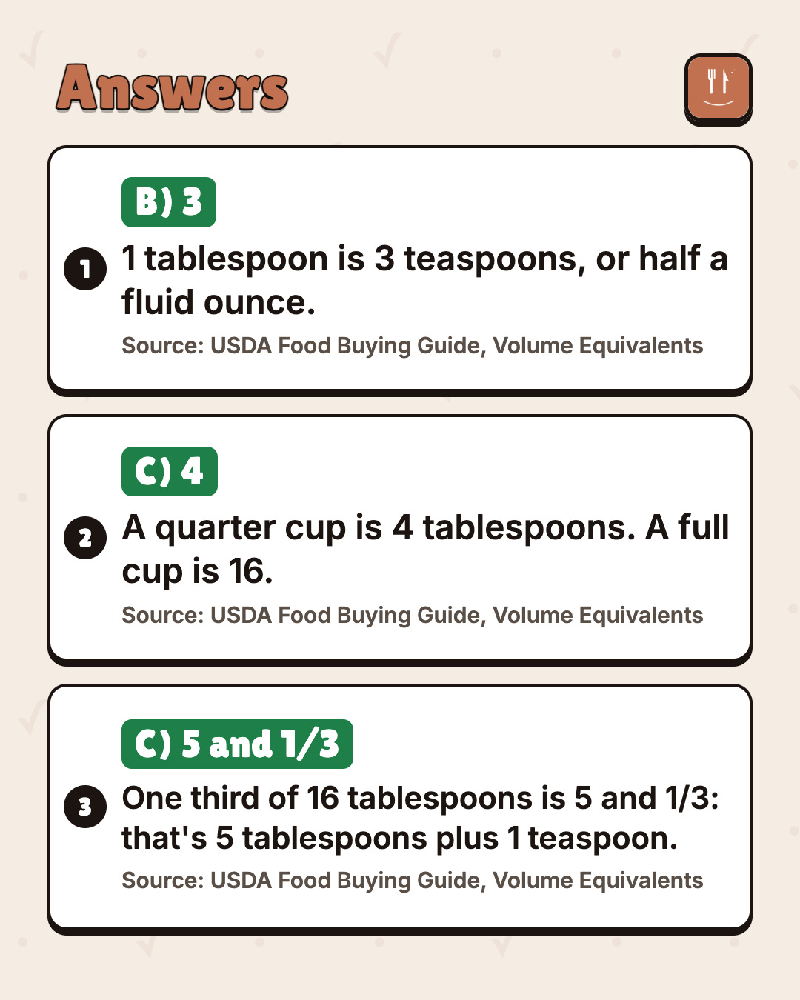
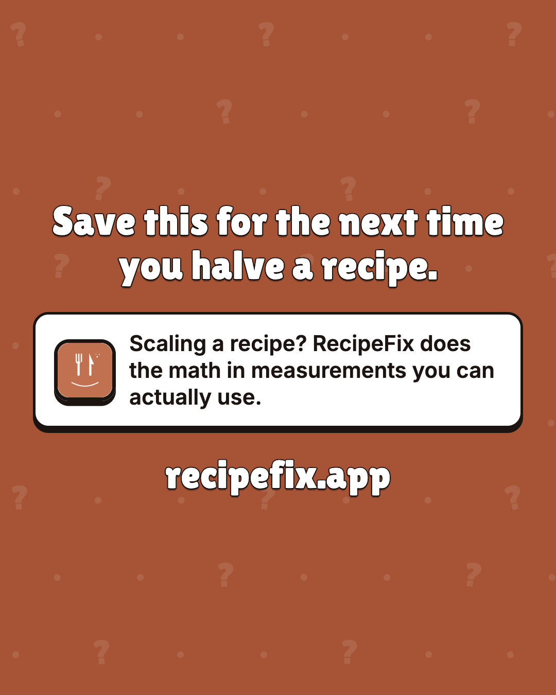
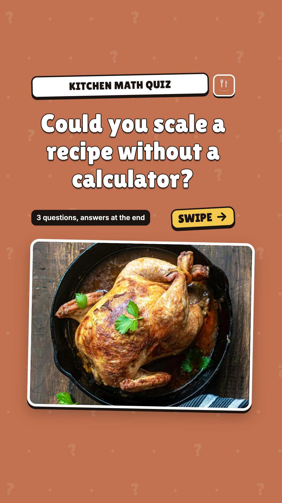
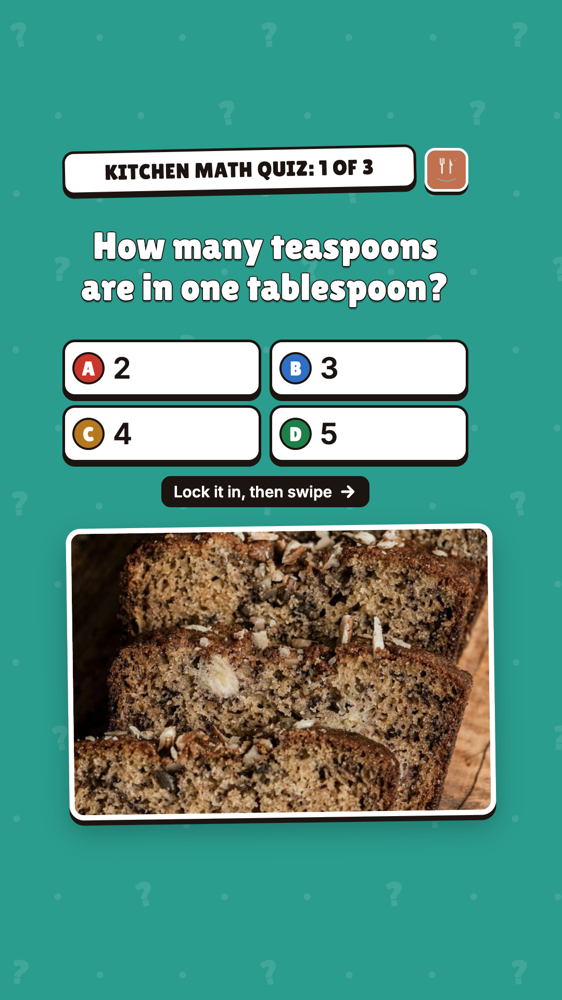
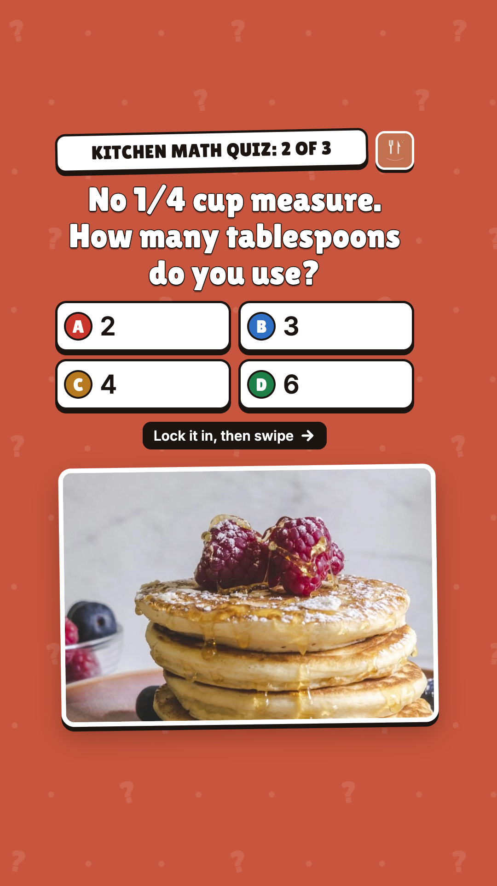
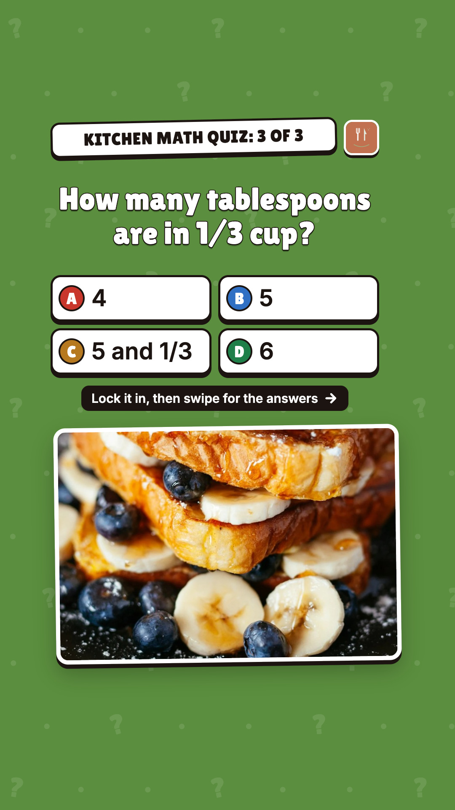
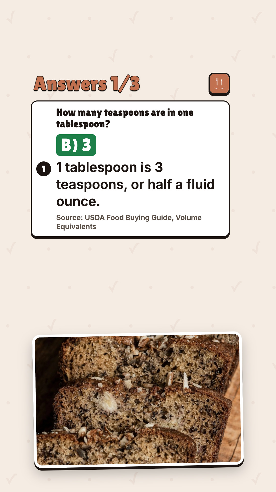
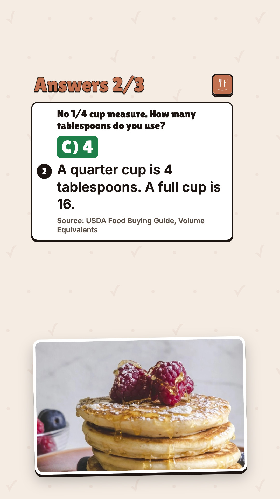
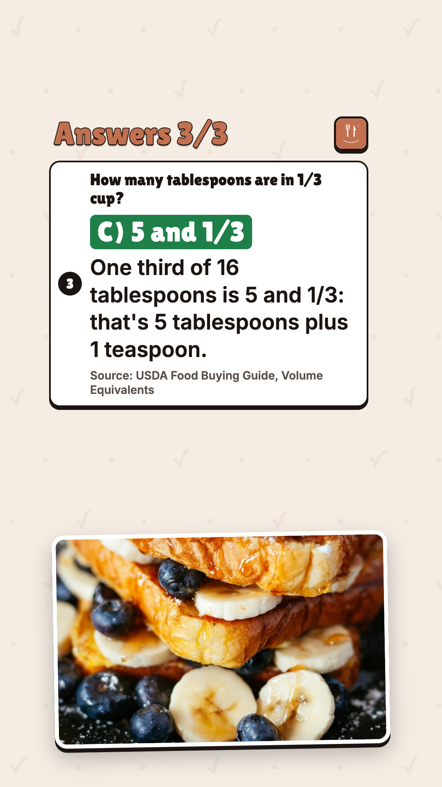
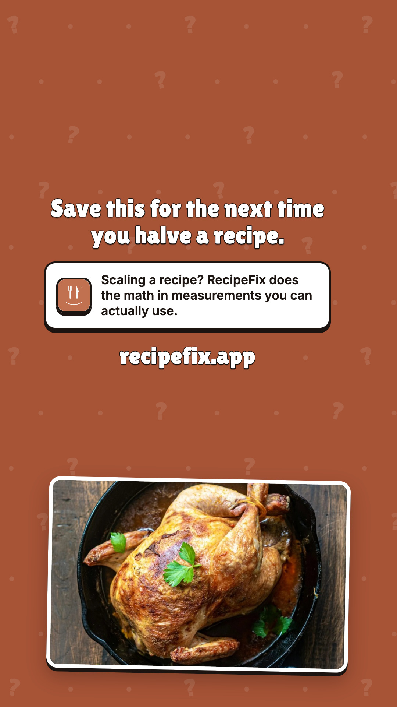
3 kitchen math questions. The last one is harder than it looks. Answers and the USDA source are on the last slides. Save it for the next time you halve a recipe. Scaling a recipe? RecipeFix does the math in measurements you can actually use. #cookingtips #bakingtips #kitchenhacks #recipefix
media: runs/2026-10-27/slides-quiz-kitchen-math/slides/ig-01-cover.jpg, runs/2026-10-27/slides-quiz-kitchen-math/slides/ig-02-q1.jpg, runs/2026-10-27/slides-quiz-kitchen-math/slides/ig-03-q2.jpg, runs/2026-10-27/slides-quiz-kitchen-math/slides/ig-04-q3.jpg, runs/2026-10-27/slides-quiz-kitchen-math/slides/ig-05-answers.jpg, runs/2026-10-27/slides-quiz-kitchen-math/slides/ig-06-close.jpg
3 kitchen math questions. The last one is harder than it looks. Answers and the USDA source are on the last slides. Save it for the next time you halve a recipe. #cookingtips #bakingtips #kitchenhacks #foodtok #recipefix
media: runs/2026-10-27/slides-quiz-kitchen-math/slides/tiktok-01-cover.jpg, runs/2026-10-27/slides-quiz-kitchen-math/slides/tiktok-02-q1.jpg, runs/2026-10-27/slides-quiz-kitchen-math/slides/tiktok-03-q2.jpg, runs/2026-10-27/slides-quiz-kitchen-math/slides/tiktok-04-q3.jpg, runs/2026-10-27/slides-quiz-kitchen-math/slides/tiktok-05-answers1.jpg, runs/2026-10-27/slides-quiz-kitchen-math/slides/tiktok-06-answers2.jpg, runs/2026-10-27/slides-quiz-kitchen-math/slides/tiktok-07-answers3.jpg, runs/2026-10-27/slides-quiz-kitchen-math/slides/tiktok-08-close.jpg · title: Kitchen math quiz: 3 questions, answers at the end
Could you scale a recipe without a calculator? 3 questions. Answers in the reply, no peeking. #cookingtips #bakingtips #recipefix
thread:
1. Answer: B) 3 1 tablespoon is 3 teaspoons, or half a fluid ounce. Source: USDA Food Buying Guide, Volume Equivalents
2. Answer: C) 4 A quarter cup is 4 tablespoons. A full cup is 16. Source: USDA Food Buying Guide, Volume Equivalents
3. Answer: C) 5 and 1/3 One third of 16 tablespoons is 5 and 1/3: that's 5 tablespoons plus 1 teaspoon. Source: USDA Food Buying Guide, Volume Equivalents
Scaling a recipe? RecipeFix does the math in measurements you can actually use.
media: runs/2026-10-27/slides-quiz-kitchen-math/slides/ig-02-q1.jpg, runs/2026-10-27/slides-quiz-kitchen-math/slides/ig-03-q2.jpg, runs/2026-10-27/slides-quiz-kitchen-math/slides/ig-04-q3.jpg
Could you scale a recipe without a calculator? 3 questions. Answers in the reply, no peeking. #cookingtips #bakingtips #recipefix
thread:
1. Answer: B) 3 1 tablespoon is 3 teaspoons, or half a fluid ounce. Source: USDA Food Buying Guide, Volume Equivalents
2. Answer: C) 4 A quarter cup is 4 tablespoons. A full cup is 16. Source: USDA Food Buying Guide, Volume Equivalents
3. Answer: C) 5 and 1/3 One third of 16 tablespoons is 5 and 1/3: that's 5 tablespoons plus 1 teaspoon. Source: USDA Food Buying Guide, Volume Equivalents
Scaling a recipe? RecipeFix does the math in measurements you can actually use.
media: runs/2026-10-27/slides-quiz-kitchen-math/slides/ig-02-q1.jpg, runs/2026-10-27/slides-quiz-kitchen-math/slides/ig-03-q2.jpg, runs/2026-10-27/slides-quiz-kitchen-math/slides/ig-04-q3.jpg
1 tablespoon = 3 teaspoons = 0.5 fluid ounce; 1/4 cup = 4 tablespoons; 1/3 cup = 5 1/3 tablespoons; 1 cup = 16 tablespoons
1 tablespoon = 3 teaspoons = 0.5 fluid ounce; 1/4 cup = 4 tablespoons; 1/3 cup = 5 1/3 tablespoons; 1 cup = 16 tablespoons
1 tablespoon = 3 teaspoons = 0.5 fluid ounce; 1/4 cup = 4 tablespoons; 1/3 cup = 5 1/3 tablespoons; 1 cup = 16 tablespoons
| PASS | ig-1:file | jpeg 1080×1350 |
| PASS | ig-1-cover:still.canvas | 1080×1350 |
| PASS | ig-1-cover:still.text_readback | 4 lines held to read-back, min similarity 1.00; 0 single-glyph lines checked by eye only (OCR vision: 19 words, file: 20 words, inverted: 19 words, rules removed: 23 words, white-text mask: 15 words, dark-text mask: 19 words) |
| PASS | ig-1-cover:still.no_artefacts | no [object Object] / undefined / NaN / braces read on the image |
| PASS | ig-1-cover:still.safe_zone | 15 word boxes inside x 60–1020, y 60–1290 |
| PASS | ig-1-cover:still.text_overlap | no two intended lines overprint each other |
| PASS | ig-1-cover:still.text_size | every line's median OCR word height ≥ 22px |
| PASS | ig-1-cover:still.contrast | min 11.63:1 over 15 word boxes (WCAG AA 4.5:1) |
| PASS | ig-2:file | jpeg 1080×1350 |
| PASS | ig-2-q1:still.canvas | 1080×1350 |
| PASS | ig-2-q1:still.text_readback | 3 lines held to read-back, min similarity 1.00; 0 single-glyph lines checked by eye only (OCR vision: 22 words, file: 32 words, inverted: 19 words, rules removed: 23 words, white-text mask: 17 words, dark-text mask: 28 words) |
| PASS | ig-2-q1:still.no_artefacts | no [object Object] / undefined / NaN / braces read on the image |
| PASS | ig-2-q1:still.safe_zone | 14 word boxes inside x 60–1020, y 60–1290 |
| PASS | ig-2-q1:still.text_overlap | no two intended lines overprint each other |
| PASS | ig-2-q1:still.text_size | every line's median OCR word height ≥ 22px |
| PASS | ig-2-q1:still.contrast | min 7.74:1 over 14 word boxes (WCAG AA 4.5:1) |
| PASS | ig-3:file | jpeg 1080×1350 |
| PASS | ig-3-q2:still.canvas | 1080×1350 |
| PASS | ig-3-q2:still.text_readback | 3 lines held to read-back, min similarity 1.00; 0 single-glyph lines checked by eye only (OCR vision: 27 words, file: 26 words, inverted: 30 words, rules removed: 34 words, white-text mask: 25 words, dark-text mask: 17 words) |
| PASS | ig-3-q2:still.no_artefacts | no [object Object] / undefined / NaN / braces read on the image |
| PASS | ig-3-q2:still.safe_zone | 16 word boxes inside x 60–1020, y 60–1290 |
| PASS | ig-3-q2:still.text_overlap | no two intended lines overprint each other |
| PASS | ig-3-q2:still.text_size | every line's median OCR word height ≥ 22px |
| PASS | ig-3-q2:still.contrast | min 8.70:1 over 16 word boxes (WCAG AA 4.5:1) |
| PASS | ig-4:file | jpeg 1080×1350 |
| PASS | ig-4-q3:still.canvas | 1080×1350 |
| PASS | ig-4-q3:still.text_readback | 4 lines held to read-back, min similarity 1.00; 0 single-glyph lines checked by eye only (OCR vision: 29 words, file: 33 words, inverted: 22 words, rules removed: 31 words, white-text mask: 17 words, dark-text mask: 18 words) |
| PASS | ig-4-q3:still.no_artefacts | no [object Object] / undefined / NaN / braces read on the image |
| PASS | ig-4-q3:still.safe_zone | 20 word boxes inside x 60–1020, y 60–1290 |
| PASS | ig-4-q3:still.text_overlap | no two intended lines overprint each other |
| PASS | ig-4-q3:still.text_size | every line's median OCR word height ≥ 22px |
| PASS | ig-4-q3:still.contrast | min 8.21:1 over 20 word boxes (WCAG AA 4.5:1) |
| PASS | ig-5:file | jpeg 1080×1350 |
| PASS | ig-5-answers:still.canvas | 1080×1350 |
| PASS | ig-5-answers:still.text_readback | 8 lines held to read-back, min similarity 1.00; 2 single-glyph lines checked by eye only (OCR vision: 65 words, file: 63 words, inverted: 67 words, rules removed: 65 words, white-text mask: 66 words, dark-text mask: 62 words) |
| PASS | ig-5-answers:still.no_artefacts | no [object Object] / undefined / NaN / braces read on the image |
| PASS | ig-5-answers:still.safe_zone | 52 word boxes inside x 60–1020, y 60–1290 |
| PASS | ig-5-answers:still.text_overlap | no two intended lines overprint each other |
| PASS | ig-5-answers:still.text_size | every line's median OCR word height ≥ 22px |
| PASS | ig-5-answers:still.contrast | min 5.02:1 over 52 word boxes (WCAG AA 4.5:1) |
| PASS | ig-6:file | jpeg 1080×1350 |
| PASS | ig-6-close:still.canvas | 1080×1350 |
| PASS | ig-6-close:still.text_readback | 3 lines held to read-back, min similarity 1.00; 0 single-glyph lines checked by eye only (OCR vision: 24 words, file: 25 words, inverted: 26 words, rules removed: 25 words, white-text mask: 27 words, dark-text mask: 23 words) |
| PASS | ig-6-close:still.no_artefacts | no [object Object] / undefined / NaN / braces read on the image |
| PASS | ig-6-close:still.safe_zone | 22 word boxes inside x 60–1020, y 60–1290 |
| PASS | ig-6-close:still.text_overlap | no two intended lines overprint each other |
| PASS | ig-6-close:still.text_size | every line's median OCR word height ≥ 22px |
| PASS | ig-6-close:still.contrast | min 11.76:1 over 22 word boxes (WCAG AA 4.5:1) |
| PASS | tiktok-1:file | jpeg 1080×1920 |
| PASS | tiktok-1-cover:still.canvas | 1080×1920 |
| PASS | tiktok-1-cover:still.text_readback | 4 lines held to read-back, min similarity 1.00; 0 single-glyph lines checked by eye only (OCR vision: 19 words, file: 21 words, inverted: 28 words, rules removed: 25 words, white-text mask: 17 words, dark-text mask: 32 words) |
| PASS | tiktok-1-cover:still.no_artefacts | no [object Object] / undefined / NaN / braces read on the image |
| PASS | tiktok-1-cover:still.safe_zone | 15 word boxes inside x 120–900, y 270–1250 |
| PASS | tiktok-1-cover:still.text_overlap | no two intended lines overprint each other |
| PASS | tiktok-1-cover:still.text_size | every line's median OCR word height ≥ 22px |
| PASS | tiktok-1-cover:still.contrast | min 11.68:1 over 15 word boxes (WCAG AA 4.5:1) |
| PASS | tiktok-2:file | jpeg 1080×1920 |
| PASS | tiktok-2-q1:still.canvas | 1080×1920 |
| PASS | tiktok-2-q1:still.text_readback | 3 lines held to read-back, min similarity 1.00; 0 single-glyph lines checked by eye only (OCR vision: 23 words, file: 13 words, inverted: 19 words, rules removed: 13 words, white-text mask: 17 words, dark-text mask: 33 words) |
| PASS | tiktok-2-q1:still.no_artefacts | no [object Object] / undefined / NaN / braces read on the image |
| PASS | tiktok-2-q1:still.safe_zone | 14 word boxes inside x 120–900, y 270–1250 |
| PASS | tiktok-2-q1:still.text_overlap | no two intended lines overprint each other |
| PASS | tiktok-2-q1:still.text_size | every line's median OCR word height ≥ 22px |
| PASS | tiktok-2-q1:still.contrast | min 7.57:1 over 14 word boxes (WCAG AA 4.5:1) |
| PASS | tiktok-3:file | jpeg 1080×1920 |
| PASS | tiktok-3-q2:still.canvas | 1080×1920 |
| PASS | tiktok-3-q2:still.text_readback | 3 lines held to read-back, min similarity 1.00; 0 single-glyph lines checked by eye only (OCR vision: 25 words, file: 29 words, inverted: 36 words, rules removed: 25 words, white-text mask: 23 words, dark-text mask: 12 words) |
| PASS | tiktok-3-q2:still.no_artefacts | no [object Object] / undefined / NaN / braces read on the image |
| PASS | tiktok-3-q2:still.safe_zone | 16 word boxes inside x 120–900, y 270–1250 |
| PASS | tiktok-3-q2:still.text_overlap | no two intended lines overprint each other |
| PASS | tiktok-3-q2:still.text_size | every line's median OCR word height ≥ 22px |
| PASS | tiktok-3-q2:still.contrast | min 9.53:1 over 16 word boxes (WCAG AA 4.5:1) |
| PASS | tiktok-4:file | jpeg 1080×1920 |
| PASS | tiktok-4-q3:still.canvas | 1080×1920 |
| PASS | tiktok-4-q3:still.text_readback | 4 lines held to read-back, min similarity 1.00; 0 single-glyph lines checked by eye only (OCR vision: 28 words, file: 19 words, inverted: 19 words, rules removed: 21 words, white-text mask: 18 words, dark-text mask: 17 words) |
| PASS | tiktok-4-q3:still.no_artefacts | no [object Object] / undefined / NaN / braces read on the image |
| PASS | tiktok-4-q3:still.safe_zone | 20 word boxes inside x 120–900, y 270–1250 |
| PASS | tiktok-4-q3:still.text_overlap | no two intended lines overprint each other |
| PASS | tiktok-4-q3:still.text_size | every line's median OCR word height ≥ 22px |
| PASS | tiktok-4-q3:still.contrast | min 8.75:1 over 20 word boxes (WCAG AA 4.5:1) |
| PASS | tiktok-5:file | jpeg 1080×1920 |
| PASS | tiktok-5-answers1:still.canvas | 1080×1920 |
| PASS | tiktok-5-answers1:still.text_readback | 4 lines held to read-back, min similarity 1.00; 1 single-glyph lines checked by eye only (OCR vision: 29 words, file: 35 words, inverted: 40 words, rules removed: 34 words, white-text mask: 28 words, dark-text mask: 45 words) |
| PASS | tiktok-5-answers1:still.no_artefacts | no [object Object] / undefined / NaN / braces read on the image |
| PASS | tiktok-5-answers1:still.safe_zone | 21 word boxes inside x 120–900, y 270–1250 |
| PASS | tiktok-5-answers1:still.text_overlap | no two intended lines overprint each other |
| PASS | tiktok-5-answers1:still.text_size | every line's median OCR word height ≥ 22px |
| PASS | tiktok-5-answers1:still.contrast | min 7.87:1 over 21 word boxes (WCAG AA 4.5:1) |
| PASS | tiktok-6:file | jpeg 1080×1920 |
| PASS | tiktok-6-answers2:still.canvas | 1080×1920 |
| PASS | tiktok-6-answers2:still.text_readback | 4 lines held to read-back, min similarity 1.00; 1 single-glyph lines checked by eye only (OCR vision: 32 words, file: 48 words, inverted: 42 words, rules removed: 46 words, white-text mask: 35 words, dark-text mask: 46 words) |
| PASS | tiktok-6-answers2:still.no_artefacts | no [object Object] / undefined / NaN / braces read on the image |
| PASS | tiktok-6-answers2:still.safe_zone | 23 word boxes inside x 120–900, y 270–1250 |
| PASS | tiktok-6-answers2:still.text_overlap | no two intended lines overprint each other |
| PASS | tiktok-6-answers2:still.text_size | every line's median OCR word height ≥ 22px |
| PASS | tiktok-6-answers2:still.contrast | min 7.87:1 over 23 word boxes (WCAG AA 4.5:1) |
| PASS | tiktok-7:file | jpeg 1080×1920 |
| PASS | tiktok-7-answers3:still.canvas | 1080×1920 |
| PASS | tiktok-7-answers3:still.text_readback | 5 lines held to read-back, min similarity 1.00; 0 single-glyph lines checked by eye only (OCR vision: 35 words, file: 44 words, inverted: 40 words, rules removed: 44 words, white-text mask: 31 words, dark-text mask: 41 words) |
| PASS | tiktok-7-answers3:still.no_artefacts | no [object Object] / undefined / NaN / braces read on the image |
| PASS | tiktok-7-answers3:still.safe_zone | 30 word boxes inside x 120–900, y 270–1250 |
| PASS | tiktok-7-answers3:still.text_overlap | no two intended lines overprint each other |
| PASS | tiktok-7-answers3:still.text_size | every line's median OCR word height ≥ 22px |
| PASS | tiktok-7-answers3:still.contrast | min 5.02:1 over 30 word boxes (WCAG AA 4.5:1) |
| PASS | tiktok-8:file | jpeg 1080×1920 |
| PASS | tiktok-8-close:still.canvas | 1080×1920 |
| PASS | tiktok-8-close:still.text_readback | 3 lines held to read-back, min similarity 1.00; 0 single-glyph lines checked by eye only (OCR vision: 24 words, file: 18 words, inverted: 30 words, rules removed: 19 words, white-text mask: 24 words, dark-text mask: 41 words) |
| PASS | tiktok-8-close:still.no_artefacts | no [object Object] / undefined / NaN / braces read on the image |
| PASS | tiktok-8-close:still.safe_zone | 22 word boxes inside x 120–900, y 270–1250 |
| PASS | tiktok-8-close:still.text_overlap | no two intended lines overprint each other |
| PASS | tiktok-8-close:still.text_size | every line's median OCR word height ≥ 22px |
| PASS | tiktok-8-close:still.contrast | min 9.71:1 over 22 word boxes (WCAG AA 4.5:1) |
| PASS | photo.aspect:photo-lemon-herb-roast-chicken-820x520.jpg | crop 1600×1015 (aspect 1.5764) drawn at 820×520 (1.5769); downscale only |
| PASS | photo.aspect:photo-classic-banana-bread-760x380.jpg | crop 1600×800 (aspect 2.0000) drawn at 760×380 (2.0000); downscale only |
| PASS | photo.aspect:photo-fluffy-buttermilk-pancakes-760x380.jpg | crop 1600×800 (aspect 2.0000) drawn at 760×380 (2.0000); downscale only |
| PASS | photo.aspect:photo-blueberry-banana-french-toast-760x380.jpg | crop 1600×800 (aspect 2.0000) drawn at 760×380 (2.0000); downscale only |
| PASS | photo.aspect:photo-lemon-herb-roast-chicken-840x620.jpg | crop 1600×1181 (aspect 1.3548) drawn at 840×620 (1.3548); downscale only |
| PASS | photo.aspect:photo-classic-banana-bread-800x540.jpg | crop 1600×1080 (aspect 1.4815) drawn at 800×540 (1.4815); downscale only |
| PASS | photo.aspect:photo-fluffy-buttermilk-pancakes-800x540.jpg | crop 1600×1080 (aspect 1.4815) drawn at 800×540 (1.4815); downscale only |
| PASS | photo.aspect:photo-blueberry-banana-french-toast-800x540.jpg | crop 1600×1080 (aspect 1.4815) drawn at 800×540 (1.4815); downscale only |
| PASS | photo.aspect:photo-classic-banana-bread-800x500.jpg | crop 1600×1000 (aspect 1.6000) drawn at 800×500 (1.6000); downscale only |
| PASS | photo.aspect:photo-fluffy-buttermilk-pancakes-800x500.jpg | crop 1600×1000 (aspect 1.6000) drawn at 800×500 (1.6000); downscale only |
| PASS | photo.aspect:photo-blueberry-banana-french-toast-800x500.jpg | crop 1600×1000 (aspect 1.6000) drawn at 800×500 (1.6000); downscale only |
| PASS | photo.aspect:photo-lemon-herb-roast-chicken-800x500.jpg | crop 1600×1000 (aspect 1.6000) drawn at 800×500 (1.6000); downscale only |
| PASS | payload.counts | 6 Instagram slides (2–20), 8 TikTok photos (≤35), 3 X images (≤4) |
| PASS | copy.platform_rules | lengths, X titles, no link in the X post, 3–5 hashtags incl. #recipefix, no forbidden claims, no bait, reads human |
| PASS | knowledge.product_posts | pack ad17c991 has a release receipt |